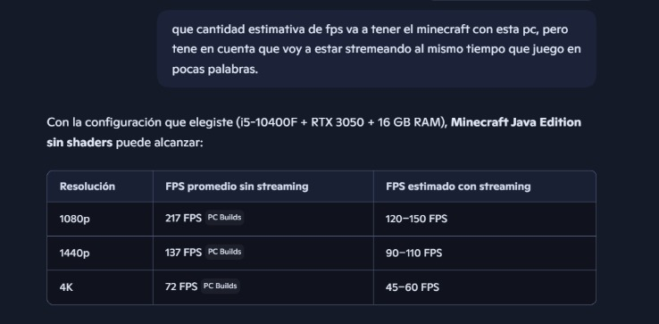
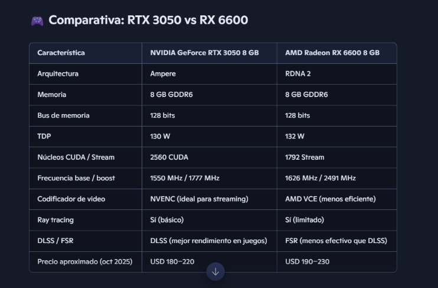

Si se planea transmitir en vivo mientras se juega Minecraft, se deben considerar los siguientes puntos:
Parte individual de Rocio Paul
Presupuestos:
Software:
Sistema operativo: Linux (compatible con Minecraft y gratuito)
Precio: Gratis
Juego: Minecraft
Precio: 35 USD
Link
Software para stremear: OBS — fácil de aprender
Precio: Gratis
Link
PRECIO FINAL DE SOFTWARE: 35 USD
Hardware:
Motherboard: MSI H510M-B PRO II
- Socket: LGA 1200
- Chipset: Intel H510
- Formato: MicroATX
- RAM: 2 slots DDR4 hasta 64 GB
- Almacenamiento: 4x SATA III + 1x M.2 NVMe
Precio: $91.100,00
Fuente
Justificación: económica y suficiente para jugar y stremear
Alternativa descartada: MSI B560M PRO
Microprocesador: Intel i5-10400F
- 6 núcleos / 12 hilos
- Frecuencia: 2.9 GHz base / 4.3 GHz turbo
- Caché: 12 MB
Precio: $185.100,00
Fuente
Justificación: económico y compatible
Alternativa descartada: Intel i3-10100F
Memoria RAM: Hiksemi 16GB DDR4 3200MHz
Precio: $50.400,00
Fuente
Justificación: 16GB suficiente y deja espacio para ampliar
Alternativa descartada: 2 módulos de 8 GB
Placa de Video: RTX 3050 8GB
Precio: $368.600,00
Fuente
Justificación: permite jugar y transmitir en 1080p
Alternativa descartada: GTX 1650 SUPER
SSD: NVMe WD Green 250GB
Precio: $184.700,00
Fuente
Justificación: buena capacidad para juegos
Alternativa descartada: 250GB SSD básico
Fuente: Cooler Master 650W Bronze
Precio: $99.900,00
Fuente
Justificación: ya la tengo y funcionó bien
Alternativa descartada: fuente 500W
Gabinete: Zer01 Gaming Centauri
Precio: $32.000,00
Fuente
Justificación: buen flujo de aire con 3 ventiladores
Alternativa descartada: gabinete sin ventiladores
Periféricos: Combo teclado + mouse RGB
Precio: $43.803,00
Fuente
Justificación: económico y útil para Minecraft PVP
Alternativa descartada: periféricos por separado
Monitor: LED Solarmax SX19F2
Precio: $84.200,00
Fuente
Justificación: suficiente para empezar
Alternativa descartada: monitor más grande
Auriculares: Redragon con micrófono
Precio: $36.900,00
Fuente
Justificación: micrófono integrado para ahorrar
Alternativa descartada: sin micrófono
UPS: Lyonn 500VA
Precio: $62.999
Fuente
Justificación: protege de cortes de luz
Alternativa descartada: sin UPS
Tienda original: https://www.maximus.com.ar/
PRESUPUESTO FINAL: $1.288.699
Total del presupuesto utilizado: 917 USD
FPS aproximados para Minecraft: entre 120 y 150 FPS estimados.
Según la IA se esperan entre 120 y 150 fps pero esto puede variar demasiado ya que depende de la configuración de los gráficos además de que se pueden instalar programas externos como OptiFine que son gratis y mejoran el rendimiento..
Calidad y resolución de transmisión esperada: 1080p
Con los componentes elegidos se espera que se pueda transmitir en 1080p pero también depende de la velocidad de internet que tenga.
1. Capturas con la IA+ reflexion.

Reflexión de la imagen N°3:
Considero que tiene razón ya que el stream utiliza bastantes recursos y además el minecraft es un juego que tiene más de 15 años por lo que no tiene el mejor rendimiento posible, otra cuestión por la que tiene razón es que muchos le agrega shader o texturs pack para que quede más bonito pero también genera un mayor uso de la placa de video y más aún si se quiere jugar a algun mapa ya que hay algunos que con una placa menor a esta no correrian bien, el minecraft al ser un juego con infinitas posibilidades se hace de todo pero los periféricos muchas veces limitan al jugador en esta experiencia infinita de posibilidades así que tener esta placa de video nos expande un poco más las posibilidades de lo que podemos hacer en nuestro mundo de minecraft.
2. Tabla comparativa generada con ayuda de IA + validación

Cuadro N°1: elegí la RTX 3050 porque la otra ofrece prácticamente lo mismo pero a un mayor precio.
cuadro N°2: elegí la Cooler Master 650W Bronze porque tiene una mayor potencia lo cual es necesario para alimentar la placa de video que elegí en el cuadro anterior.
Fuente externa: https://technical.city/es/video/Radeon-RX-6600-vs-GeForce-RTX-3050-8-GB
Utilice esta página que sirve para comparar componentes y coincide con lo que dijo la IA
3. Resumen técnico explicado con IA + traducción al “lenguaje común”
¿Qué es el bitrate en streaming?
Explicación de la IA: Bitrate en streaming es la cantidad de datos transmitidos por segundo durante una emisión en vivo. Se mide en kbps (kilobits por segundo) y determina la calidad del video y audio. Un bitrate alto mejora la definición, pero requiere mayor ancho de banda. Si la conexión no lo soporta, puede generar cortes o baja estabilidad. Para transmisiones en 720p se recomienda entre 2500 y 3500 kbps; para 1080p, entre 4500 y 6000 kbps. El bitrate debe ajustarse según la velocidad de subida disponible y el tipo de contenido transmitido.
Explicación con mis palabras: El bitrate es la cantidad de datos que se mandan por segundo cuando hacés un stream. Cuanto más alto es, mejor se ve el video, pero también necesita más internet. Si el bitrate es muy bajo, el stream se puede ver pixelado o con mala calidad. Y si es muy alto y tu conexión no lo aguanta, se puede llegar cortar o trabar.
¿Qué es la latencia?
Explicación de la IA: Latencia es el tiempo que tarda un paquete de datos en viajar desde el origen hasta el destino en una red. Se mide en milisegundos (ms) y representa el retraso entre una acción y su respuesta. En streaming, afecta la sincronización entre lo que ocurre en tiempo real y lo que ve el espectador. En juegos online, influye directamente en la velocidad de respuesta del servidor. Una latencia baja (por debajo de 50 ms) es ideal para transmisiones fluidas y partidas sin demoras. Factores como la calidad del proveedor de internet, la distancia al servidor y el tipo de conexión (cable vs Wi-Fi) impactan en la latencia.
Explicación con mis palabras: La latencia es el tiempo que tarda en ir la informacion desde tu compu hasta el internet, es este pequeño dilay que se produce entre lo que esta haciendo el streamer y lo que ve el usuario desde el stream, la cantidad de este dilay puede variar dependiendo de la velocidad del internet.
¿Qué función cumple la GPU en una PC gamer?
Explicación de la IA: La GPU (Unidad de Procesamiento Gráfico) es el componente encargado de procesar y renderizar gráficos en una computadora. En una PC gamer, su función principal es generar las imágenes que se muestran en pantalla durante los videojuegos, calculando millones de operaciones por segundo para representar texturas, sombras, luces, movimientos y efectos visuales en tiempo real. A diferencia del CPU, que está optimizado para tareas generales y secuenciales, la GPU está diseñada para ejecutar muchas operaciones en paralelo, lo que la hace ideal para manejar cargas gráficas intensivas. Además, en tareas de streaming, la GPU también puede encargarse de la codificación de video (por ejemplo, mediante NVENC en placas NVIDIA), liberando al procesador y mejorando el rendimiento general del sistema.
Explicación con mis palabras: La GPU es la parte de la compu que se encarga de mostrar los gráficos. En una PC gamer, ayuda a que los juegos se vean bien y se muevan fluidos. Cuanto mejor sea la GPU, más calidad de imagen y más velocidad vas a tener
4. Imagen generada con IA que represente el proyecto.
Al comienzo:
Esta imagen seria de cuando se hagan los primeros stream y solo estarían las cosas que se alcanzaron a comprar con los 1000 dólares.
El furuto:
Esta imagen ya seria después de un tiempo en el que se haya podido invertir lo generado en los directos para comprar mas cosas como otro monitor para leer el chat mientras juego y un mejor micrófono.
Conclusiones finales
¿Cómo me ayudó la IA en este trabajo?
A lo largo de este trabajo la IA me ayudo a comparar componentes y recomendarme, me explico consepcion basicos a la hora de elegir componentes y en que hay que fijarse, ademas de ver si el stream me iba a correr bien con los componentes que estaba selecionando.
¿Detecté errores o información poco confiable? ¿Cómo lo resolví?
Si, detecte algunos errores en los precios que estaban desactualizados asi que siempre verifique si los precios que me decia eran actuales
¿En qué casos prefiero buscar información manualmente en lugar de usar IA?
Prefiero buscar manualmente cuando necesito encontrar páginas específicas, como en este caso la página para hacer el presupuesto. La IA suele recomendar las más conocidas, pero a veces se necesitan opciones locales o menos populares.